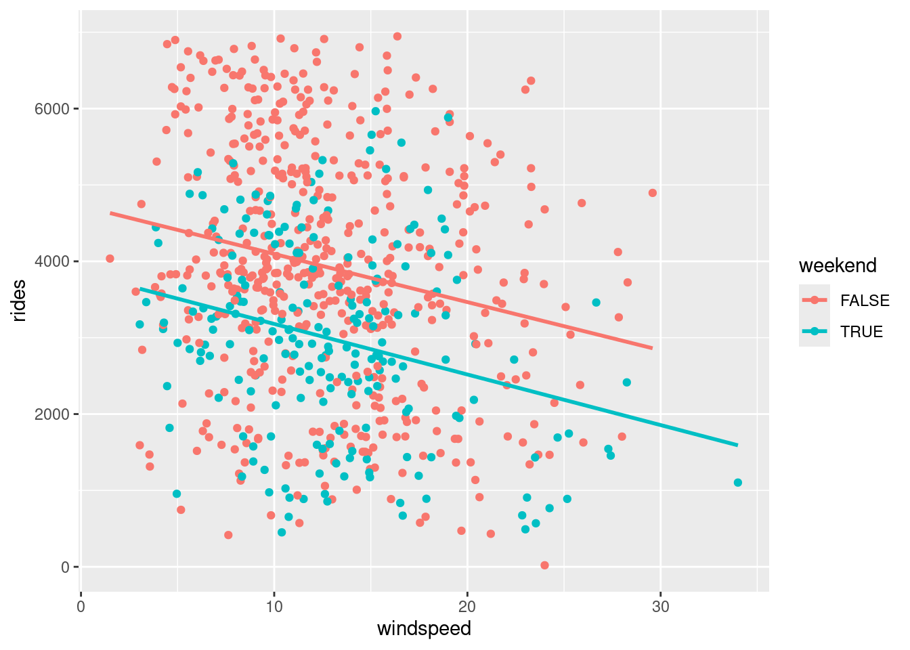
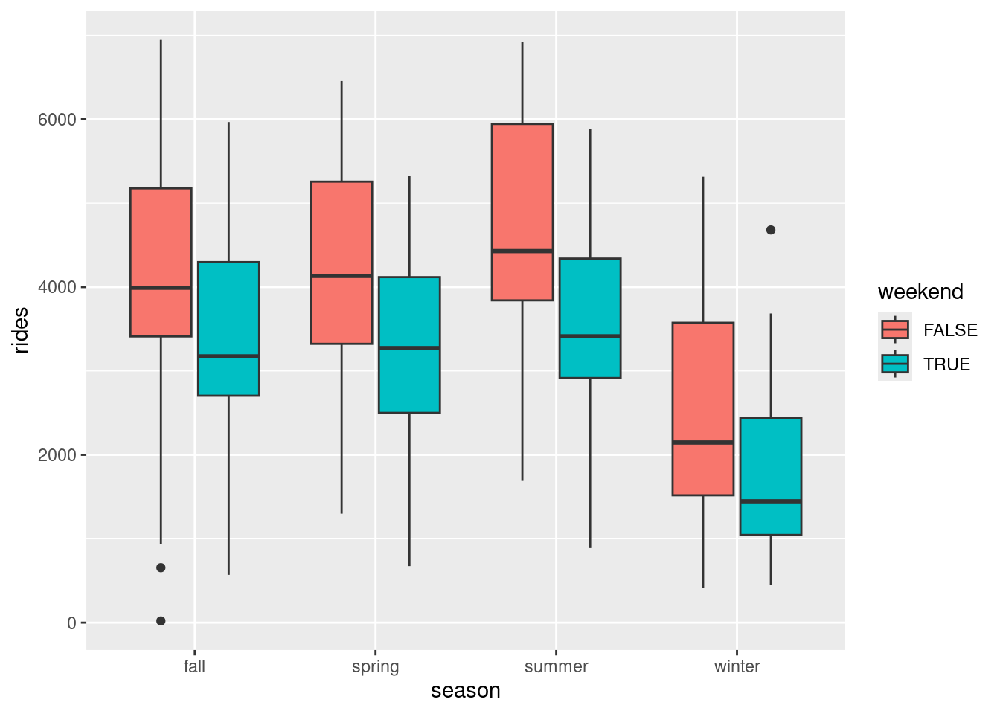
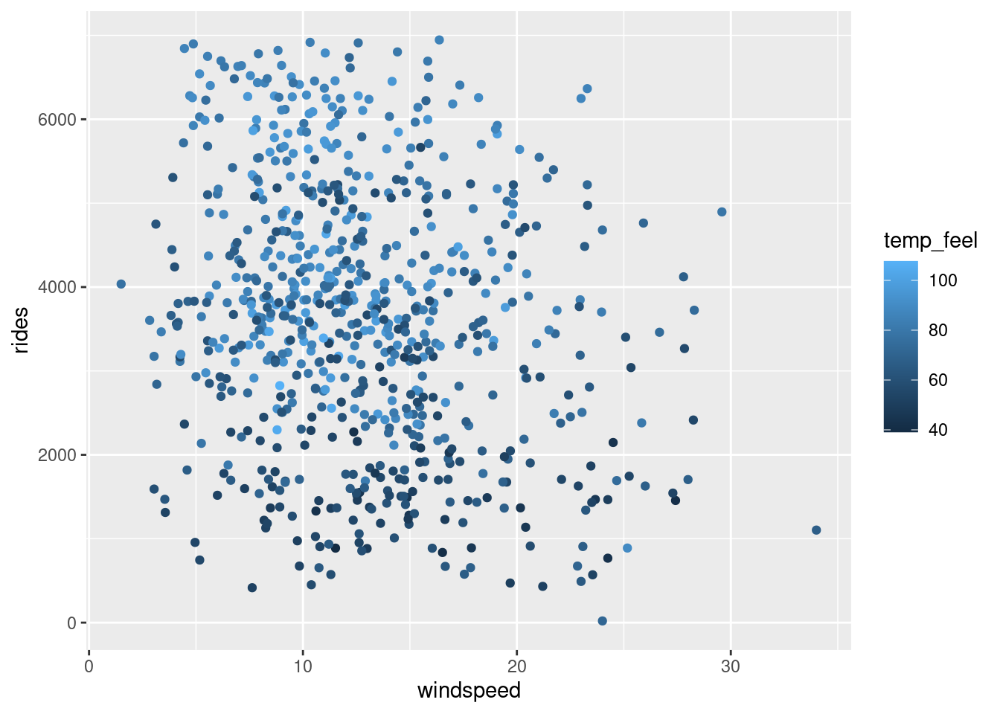
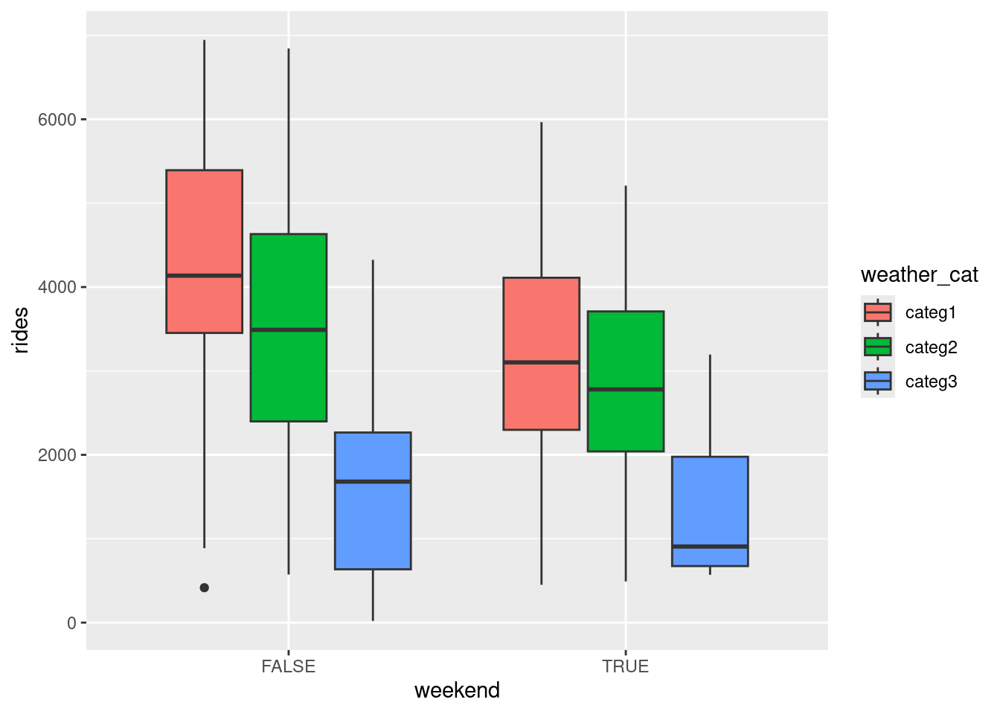
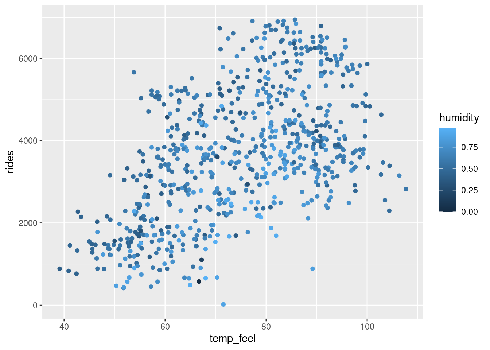
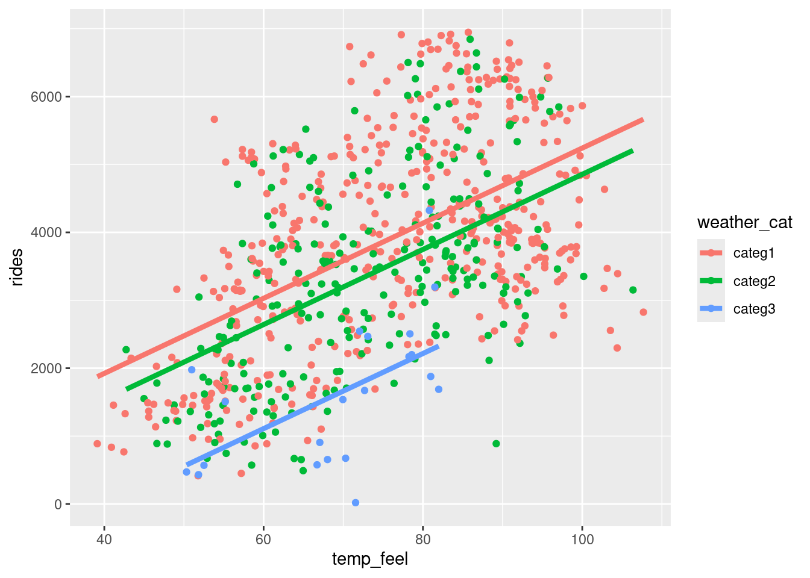
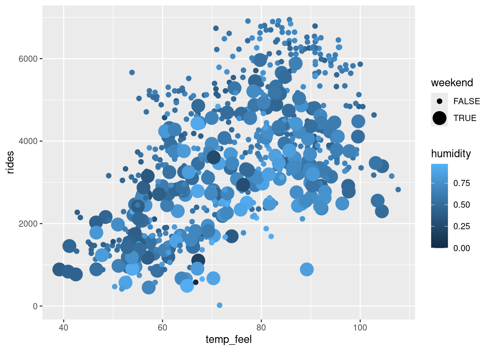

# Load packages & import data
library(readr)
library(ggplot2)
library(dplyr)
bikes <- read_csv("https://mac-stat.github.io/data/bikeshare.csv") %>%
rename(rides = riders_registered)Multiple regression principles
Notes
Learning goals
Working with multiple predictors in our plots and models can get complicated!
There are no recipes for this process.
BUT there are some guiding principles that assist in long-term retention, deeper understanding, and the ability to generalize our tools in new settings.
By the end of this lesson, you should be familiar with some general principles for…
- incorporating additional quantitative or categorical predictors in a visualization
- how additional quantitative or categorical predictors impact the physical representation of a model
- interpreting quantitative or categorical coefficients in a multiple regression model
Readings and videos
Please watch the following video before class.
Exercises
Let’s revisit the bikeshare data:
Our goal is to understand how / why registered ridership from day to day.
To this end, we’ll build various multiple linear regression models of rides by different combinations of the possible predictors.
# Check out the data
head(bikes)Exercise 1: Review visualization
Let’s build a model of rides by windspeed (quantitative) and weekend status (categorical).
Write a model statement for this regression model.
Plot & describe, in words, the relationship between these 3 variables.
# Plot of rides vs windspeed & weekend
# HINT: Start with a plot of rides vs windspeed, then add an aesthetic for weekend!Exercise 2: Review model
Let’s build the model. Run the following code:
bike_model_1 <- lm(rides ~ windspeed + weekend, data = bikes)
coef(summary(bike_model_1))The model formula with our coefficient estimates filled in is therefore:
E[rides | windspeed, weekendTRUE] = 4738.38 - 63.97 * windspeed - 925.16 * weekendTRUE
This model formula is represented by 2 lines, one corresponding to weekends and the other to weekdays. Simplify the model formula above for weekdays and weekends:
weekdays: rides = ___ - ___ windspeed
weekends: rides = ___ - ___ windspeed
Exercise 3: Review coefficient interpretation
The intercept coefficient, 4738.38, represents the intercept of the sub-model for weekdays, the reference category. What’s its contextual interpretation?
The
windspeedcoefficient, -63.97, represents the shared slope of the weekend and weekday sub-models. What’s its contextual interpretation?The
weekendTRUEcoefficient, -925.16, represents the change in intercept for the weekend vs weekday sub-model. What’s its contextual interpretation?
Exercise 4: 2 categorical predictors – visualization
Thus far, we’ve explored a couple examples of multiple regression models that have 2 predictors, 1 quantitative and 1 categorical.
So what happens when both predictors are categorical?!
To this end, let’s model rides by weekend status and season.
The below code plots rides vs season.
Modify this code to also include information about weekend.
HINT: Remember the visualization principle that additional categorical predictors require some sort of grouping mechanism / mechanism that distinguishes between the 2 groups.
# rides vs season
bikes %>%
ggplot(aes(y = rides, x = season)) +
geom_boxplot()
# rides vs season AND weekend
bikes %>%
ggplot(aes(y = rides, x = season, ___ = ___)) +
geom_boxplot()Exercise 5: follow-up
Describe (in words) the relationship of ridership with season & weekend status.
A model of
ridesbyseasonalone would be represented by only 4 expected outcomes, 1 for each season. Considering this and the plot above, how do you anticipate a model ofridesbyseasonandweekendstatus will be represented?- 2 lines, 1 for each weekend status
- 8 lines, 1 for each possible combination of season & weekend
- 2 expected outcomes, 1 for each weekend status
- 8 expected outcomes, 1 for each possible combination of season & weekend
Exercise 6: 2 categorical predictors – build the model
Let’s build the multiple regression model of rides vs season and weekend:
bike_model_2 <- lm(rides ~ weekend + season, bikes)
coef(summary(bike_model_2))Thus the model formula with coefficient estimates filled in is given by:
E[rides | weekend, season] = 4260.45 - 912.33 weekendTRUE - 116.38 seasonspring + 438.44 seasonsummer - 1719.06 seasonwinter
- Use this model to predict the ridership on the following days:
# a fall weekday
4260.45 - 912.33*___ - 116.38*___ + 438.44*___ - 1719.06*___
# a winter weekday
4260.45 - 912.33*___ - 116.38*___ + 438.44*___ - 1719.06*___
# a fall weekend day
4260.45 - 912.33*___ - 116.38*___ + 438.44*___ - 1719.06*___
# a winter weekend day
4260.45 - 912.33*___ - 116.38*___ + 438.44*___ - 1719.06*___- We only made 4 predictions here. How many possible predictions does this model produce? Is this consistent with your intuition in the previous exercise?
Exercise 7: 2 categorical predictors – interpret the model
Use your above predictions and visualization to fill in the below interpretations of the model coefficients.
Hint: What is the consequence of plugging in 0 or 1 for the different weekend and season categories?
Interpreting 4260: On average, we expect there to be 4260 riders on (weekdays/weekends) during the (fall/spring/summer/winter).
Interpreting -912: On average, in any season, we expect there to be 912 (more/fewer) riders on weekends than on ___.
An alternative interpretation: On average, we expect there to be 912 (more/fewer) riders on weekends than on ___, adjusting for season.
- Interpreting -1719: On average, on both weekdays and weekends, we expect there to be 1719 (more/fewer) riders in winter than in ___.
An alternative interpretation: On average, we expect there to be 1719 (more/fewer) riders in winter than in ___, controlling for weekday status.
Exercise 8: 2 quantitative predictors – visualization
Next, consider the relationship between rides and 2 quantitative predictors: windspeed and temp_feel. Check out the plot of this relationship below.
This reflect the visualization principle that quantitative variables require some sort of numerical scaling mechanism – rides and windspeed get numerical axes, and temp_feel gets a color scale.

Modify the code below to recreate this plot.
bikes %>%
ggplot(aes(y = rides, x = windspeed, ___ = ___)) +
geom_point()Exercise 9: follow-up
Describe (in words) the relationship of ridership with windspeed & temperature.
Exercise 10: 2 quantitative predictors – modeling
Let’s build the multiple regression model of rides vs windspeed and temp_feel:
bike_model_3 <- lm(rides ~ windspeed + temp_feel, data = bikes)
coef(summary(bike_model_3))Thus the model formula with coefficient estimates filled in is given by,
E[rides | windspeed, temp_feel] = -24.06 - 36.54 windspeed + 55.52 temp_feel
Interpret the intercept coefficient, -24.06, in context.
Interpret the
windspeedcoefficient, -36.54, in context.Interpret the
temp_feelcoefficient, 55.52, in context.
Exercise 11: Which is “best”?
We’ve now observed 3 different models of ridership, each having 2 predictors. The R-squared values of these models, along with those of the simple linear regression models with each predictor alone, are summarized below.
| model | predictors | R-squared |
|---|---|---|
bike_model_1 |
windspeed & weekend |
0.119 |
bike_model_2 |
weekend & season |
0.349 |
bike_model_3 |
windspeed & temp_feel |
0.310 |
bike_model_4 |
windspeed |
0.047 |
bike_model_5 |
temp_feel |
0.296 |
bike_model_6 |
weekend |
0.074 |
bike_model_7 |
season |
0.279 |
Which model does the best job of explaining the variability in ridership from day to day?
If you could only pick one predictor, which would it be?
What happens to R-squared when we add a second predictor to our model, and why does this make sense? For example, how does the R-squared for model 1 (with both windspeed and weekend) compare to those of model 4 (only windspeed) and model 6 (only weekend)?
Are 2 predictors always better than 1? Provide evidence and explain why this makes sense.
Exercise 12: Principles of interpretation
These exercises have revealed some principles behind interpreting model coefficients, summarized below.
Review and confirm that these make sense.
Principles of interpretation
Consider a multiple linear regression model:
\[E[Y | X_1, X_2, ..., X_p] = \beta_0 + \beta_1 X_1 + \beta_2 X_2 + ... + \beta_p X_p\]
We can interpret the coefficients as follows:
\(\beta_0\) (“beta 0”) is the y-intercept. It describes the average value of \(Y\) when \(X_1, X_2,..., X_k\) are all 0, ie. when all quantitative predictors are set to 0 and the categorical predictors are set to their reference levels.
\(\beta_i\) (“beta i”) is the coefficient of \(X_i\).
If \(X_i\) is quantitative, \(\beta_i\) describes the average change in \(Y\) associated with a 1-unit increase in \(X_i\) while at a fixed set of the other \(X\).
If \(X_i\) represents a category of a categorical variable, \(\beta_i\) describes the average difference in \(Y\) between this category and the reference category, while at a fixed set of the other \(X\).
Extra practice
The following exercises provide extra practice. If you don’t get to these during class, you’re encouraged to try them outside class.
Exercise 13: Practice 1
Consider the relationship of rides vs weekend and weather_cat.
- Construct a visualization of this relationship.
- Construct a model of this relationship.
- Interpret the first 3 model coefficients.
Exercise 14: Practice 2
Consider the relationship of rides vs temp_feel and humidity.
- Construct a visualization of this relationship.
- Construct a model of this relationship.
- Interpret the first 3 model coefficients.
Exercise 15: Practice 3
Consider the relationship of rides vs temp_feel and weather_cat.
- Construct a visualization of this relationship.
- Construct a model of this relationship.
- Interpret the first 3 model coefficients.
Exercise 16: CHALLENGE
We’ve explored models with 2 predictors. What about 3 predictors?! Consider the relationship of rides vs temp_feel, humidity, AND weekend.
- Construct a visualization of this relationship.
- Construct a model of this relationship.
- Interpret each model coefficient.
Solutions
Exercise 1: Review visualization
bikes %>%
ggplot(aes(y = rides, x = windspeed, color = weekend)) +
geom_point() +
geom_smooth(method = "lm", se = FALSE)
Exercise 2: Review model
weekdays: rides = 4738.38 - 63.97 windspeed
weekends: rides = 4738.38 - 63.97 windspeed - 925.16 = 3813.22 - 63.97 windspeed
Exercise 3: Review coefficient interpretation
We expect an average of 4738 riders on weekdays with 0 windspeed.
On average, we expect a 1mph increase in windspeed to be associated with 64 fewer riders, controlling for weekend status.
On average, we expect 925 fewer riders on weekend days than on weekends, controlling for windspeed.
Exercise 4: 2 categorical predictors – visualization
bikes %>%
ggplot(aes(y = rides, x = season, fill = weekend)) +
geom_boxplot()
Exercise 5: follow-up
In every season, ridership tends to be lower on weekends. Across weekend status, ridership tends to be highest in summer and lowest in winter.
8 expected outcomes
Exercise 6: 2 categorical predictors – build the model
#fall weekday:
4260.45 - 912.33*0 - 116.38*0 + 438.44*0 - 1719.06*0
## [1] 4260.45
#winter weekday:
4260.45 - 912.33*0 - 116.38*0 + 438.44*0 - 1719.06*1
## [1] 2541.39
#fall weekend:
4260.45 - 912.33*1 - 116.38*0 + 438.44*0 - 1719.06*0
## [1] 3348.12
#winter weekend:
4260.45 - 912.33*1 - 116.38*0 + 438.44*0 - 1719.06*1
## [1] 1629.06- 8: 2 weekend categories * 4 season categories
Exercise 7: 2 categorical predictors – interpret the model
- We expect there to be, on average, 4260 riders on weekdays during the fall.
- On average, we expect there to be 912 fewer riders on weekends than on weekends, adjusting for season.
- On average, we expect there to be 1719 fewer riders in winter than in fall, adjusting for weekday status.
Exercise 8: 2 quantitative predictors – visualization
bikes %>%
ggplot(aes(y = rides, x = windspeed, color = temp_feel)) +
geom_point() 
Exercise 9: follow-up
Ridership tends to increase with temperature (no matter the windspeed) and decrease with windspeed (no matter the temperature).
Exercise 10: 2 quantitative predictors – modeling
-24.06 = average ridership on days with 0 windspeed and a 0 degree temperature. (Note: this is a correct interpretation, even though it doesn’t make conceptual sense! The model doesn’t know that ridership can’t be negative!)
On average, we expect a 1mph increase in windspeed to be associated with 37 fewer riders on a given day, adjusting for temperature.
On average, we expect a 1 degree increase in temperature to be associated with 56 more riders on a given day, adjusting for windspeed.
Exercise 11: Which is best?
- model 2
- temperature
- R-squared increases (our model is stronger when we include another predictor)
- nope. model 1 (with windspeed and weekend) has a lower R-squared than model 5 (with only temperature)
Exercise 13: Practice 1
bikes %>%
ggplot(aes(y = rides, x = weekend, fill = weather_cat)) +
geom_boxplot()
new_model_1 <- lm(rides ~ weekend + weather_cat, bikes)
coef(summary(new_model_1))
## Estimate Std. Error t value Pr(>|t|)
## (Intercept) 4211.8741 75.54724 55.751529 9.461947e-265
## weekendTRUE -982.2106 117.24719 -8.377264 2.786301e-16
## weather_catcateg2 -608.8640 113.00211 -5.388077 9.628947e-08
## weather_catcateg3 -2360.2049 319.71640 -7.382183 4.270163e-13The average ridership on a weekday with nice weather (categ1) is 4212 rides.
On days with the same weather, we expect on average 982 rides less on a weekend than on a weekday.
On average, we expect ridership to be 609 rides less on dreary days than when the weather is nice, controlling for day of the week.
Exercise 14: Practice 2
bikes %>%
ggplot(aes(y = rides, x = temp_feel, color = humidity)) +
geom_point()
new_model_2 <- lm(rides ~ temp_feel + humidity, bikes)
coef(summary(new_model_2))
## Estimate Std. Error t value Pr(>|t|)
## (Intercept) 315.83704 303.777334 1.039699 2.988249e-01
## temp_feel 60.43316 3.272315 18.468015 9.451345e-63
## humidity -1868.99356 336.963661 -5.546573 4.078901e-08On average, we expect 316 riders on days that feel like 0 degrees with no humidity.
On average, we expect a 1 degree increase in ridership to be associated with a 60 ride increase in ridership, for days with the same humidity.
On average, we expect a 0.1 increase in humidity levels to be associated with a decrease in ridership by 187 rides, for days with the same temperature.
Exercise 15: Practice 3
new_model_3 <- lm(rides ~ temp_feel + weather_cat, bikes)
coef(summary(new_model_3))
## Estimate Std. Error t value Pr(>|t|)
## (Intercept) -288.68840 251.264383 -1.148943 2.509574e-01
## temp_feel 55.30133 3.215495 17.198387 7.082670e-56
## weather_catcateg2 -386.42241 100.187725 -3.856984 1.249775e-04
## weather_catcateg3 -1919.01375 283.022420 -6.780430 2.481218e-11
bikes %>%
ggplot(aes(y = rides, x = temp_feel, color = weather_cat)) +
geom_point() +
geom_line(aes(y = new_model_3$fitted.values), size = 1.5)
We expect an average of -289 riders on nice weather days that feel like 0 degrees. (Note: this is a correct interpretation, even though it doesn’t make conceptual sense!)
On average, we expect a 1 degree increase in temperature to be associated with a 55 ride increase, for days with the same weather.
On average, we expect the number of rides to be 386 rides lower on a dreary weather day compared to a nice weather day, for days with the same temperature.
Exercise 16: CHALLENGE
bikes %>%
ggplot(aes(y = rides, x = temp_feel, color = humidity, size = weekend)) +
geom_point()
new_model_4 <- lm(rides ~ temp_feel + humidity + weekend, bikes)
coef(summary(new_model_4))
## Estimate Std. Error t value Pr(>|t|)
## (Intercept) 668.60236 292.181063 2.288315 2.240530e-02
## temp_feel 59.36751 3.119256 19.032585 7.626695e-66
## humidity -1906.43437 320.982938 -5.939364 4.433789e-09
## weekendTRUE -869.05771 100.057822 -8.685555 2.471050e-17We expect an average of 669 riders on weekdays that feel like 0 degrees, and have no humidity.
On average, we expect a 1 degree increase in temperature to be associated with a 59 ride increase in ridership, for days with the same humidity levels and time of the week.
On average, we expect a 0.1 point increase in humidity levels to be associated with a 190.6 ride decrease in ridership, for days with the same temperature and time of the week.
On average, we expect ridership to be 869 rides lower on weekends compared to weekdays, controlling for temperature and humidity.